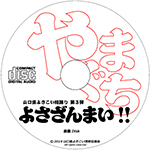
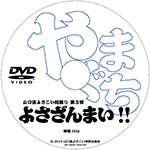
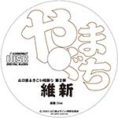
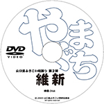
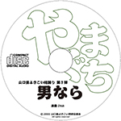
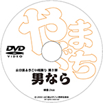

山口県のよさこい総踊り曲
よさこい総踊り曲とは、多数のチームが一斉に踊ることができるように制作された共通の楽曲です。山口県では現在「男なら」「維新」「よさざんまい！！」の3曲が制作され、よさこい祭のクライマックスなどで演舞されています。
平成27年度の県連総会において、「男なら」「維新」「よさざんまい！！」の3曲は、よさこい演舞曲としての使用に限り、「県連への使用許可は不要。誰でも自由に踊ってＯＫ。」という形に扱いを統一させていただきました。これからも山口県のよさこい総踊り曲をどうぞよろしくお願いいたします。
- 山口県よさこい総踊り曲 第3弾 よさざんまい（2014年）
- 山口県よさこい総踊り曲 第2弾 維新（2003年）
- 山口県よさこい総踊り曲 第1弾 男なら（2001年）
＜重要＞メールの返事が届かない方へ＜重要＞
携帯電話（スマートフォン）からのメールでお問い合わせの方に、こちらからの返信が届かないことがあります。（基本的にお問合せから遅くても3日以内には最初の返信を行っています。3日を過ぎても最初の返信がない場合は、メールがブロックされている可能性があります。）
お使いの携帯の迷惑メール防止機能（フィルタリング機能）を解除するか、「yamayosa.com」を許可リストに加えてから再度お問い合わせください。（極力PCのメールからお問い合わせいただけると助かります。）
設定の方法など、詳しくはお使いの携帯のお店にご相談ください。（PCのメールをご利用の方で届かない場合、お使いのメールソフトやプロバイダの設定をご確認ください。）
よさざんまい！！
2014年に完成した山口県で現在一番新しいよさこい総踊り曲です。山口県内の学生チームが主体となって制作されました。「お客さん、踊り子、山口」への感謝と、「踊り子が踊る幸せを感じられますように」との願いが込められています。「よさざんまい！！」は、子どもからお年を召された方まで、みんなが楽しんで踊ることができる総取り曲です。（作曲：山口隆博 作詞・振付：山口県内の学生チーム）
楽曲CDには「よさざんまい！！」の曲が1曲。映像DVDには、2014年のオリジナル版とねり歩き版の2つの「よさざんまい！！」レクチャー映像が収録されています。（画質・音質は撮影当時のものになります。）

山口県よさこい総踊り曲 第3弾 よさざんまい！！
楽曲CD＆レクチャー映像DVD 2014年 2枚組
県連非加盟：2,500円（税込）
県連加盟：1,000円（税込）
＋送料300円
維新
2003年に完成した山口県で2番目となるよさこい総踊り曲です。1作目が明治維新を支えた女たちの歌、萩に伝わる民謡「男なら」でしたので、それに次ぐ第2弾の曲名はズバリ「維新」。先人の「想いをつぐ（継ぐ）」という意思が込められています。（作曲： 振付：須賀よさこい連）
楽曲CDには「維新」の曲が一曲。映像DVDには、2003年のオリジナル版の「維新」レクチャー映像が収録されています。（画質・音質は撮影当時のものになります。）

山口県よさこい総踊り曲 第2弾 維新
楽曲CD＆レクチャー映像DVD 2003年 2枚組
県連非加盟：2,500円（税込）
県連加盟：1,000円（税込）
＋送料300円
男なら
2001年に完成した山口県で最初のよさこい総踊り曲です。山口県萩市とその周辺で謡われている同名の民謡をモチーフとして制作されました。2011年に開催された「おいでませ！ 山口国体」の開会式では総勢760人が踊る総踊り曲としても使用されました。「男なら」は、現在でも多くのチームに愛され続けている総踊り曲です。（作曲：田川ヒロアキ 振付：須賀よさこい連）
楽曲CDには「男なら」の曲が一曲。映像DVDには、2001年のオリジナル版と、2011年の山口国体バージョンの2つの「男なら」レクチャー映像が収録されています。画質・音質は撮影当時のものになります。）

山口県よさこい総踊り曲 第1弾 男なら
楽曲CD＆レクチャー映像DVD
2001年 2枚組
県連非加盟：2,500円（税込）
県連加盟：1,000円（税込）
＋送料300円
ご注意
- 映像は収録された当時のもののため、映像や音声が乱れることがあります。
- 踊り継がれるうちに一部が異なる他の振付けも存在する可能性があります。
- CDやDVDの内容の一部または全部を複製して再販するのはご遠慮ください。
- CDやDVDの内容の一部または全部をインターネット等で不特定多数の人に配信するのはご遠慮ください。
県連加盟と非加盟について
- 山口県よさこい連絡協議会の加盟チームは、加盟価格で購入できます。
- 山口県よさこい連絡協議会に非加盟の場合は、非加盟価格となります。
- 山口県よさこい連絡協議会への加盟は、県連までお問い合わせください。
送料と消費税について
- 郵送する場合、CD&DVD１セットにつき送料300円を別途いただいています。
- 2セット以上を同梱で発送する場合は送料をお調べしますのでご相談ください。
- 消費税は商品の価格に含まれています。
- 口座への振込手数料等はご負担ください。
総踊り曲のお問い合わせ
山口県よさこい総踊り曲の楽曲CDとレクチャー映像DVDをお求めの方は、山口県よさこい連絡協議会までお問い合わせください。（携帯メールから場合は、yamayosa.comからのメールが届くように設定をお願いします。）
- 山口県よさこい連絡協議会 お問い合わせ
- お名前、住所、商品名、数量、県連への加盟か非加盟かをお知らせください。

{kind=link}
{kind=link}
{kind=link}
{kind=link}
{kind=link}
{kind=link}